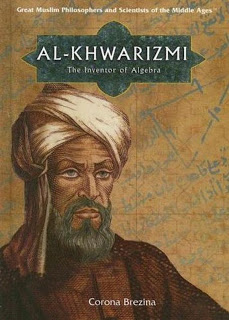

The Masterpiece of Musa Al-Khwarizmi
Semoga bisa menjadi inspirasi!

Kemajuan Pesat Karya Al Khawarizmi
Sejarah kemajuan pesat dari pengembangan peradaban ilmu ketika zaman al Khawarizmi sangatlah pesat. Karena pada zaman itu khalifah Al-Makmun sedang gencar-gencarnya untuk meningkatkan perkembangan ilmu pengetahuan pada saat itu. Efek yang sangat besar ketika khalifah sedang memperluas salah satu tempat pengembangan ilmu yaitu Baitul Hikmah yang dimana tempat tersebut adalah tempat dimana pengkajian buku dan kitab yang membahas ilmu pengetahuan. Tempat tersebut dijadikan sebagai lembaga perguruan tinggi dan tempat penelitian dan penembangan ilmu. Pada saat itu bukan hanya al Khawarizmi saja yang menjadi ahli matematika dan astronomi. Bahkan ada beberapa ulama yang disebut sebut sebagai tiga serangkai salah satunya adalah al Khawarizmi. Diantara tiga serangkai itu adalah Banu Musa ibn Shakir teman dari al Khawarizmi ketika meneliti ilmu-ilmu pengetahuan yang dulu dikumpulkan oleh khalifah terdahulu. Karena kekhalifahan Al-Makmun sangat mencintai ilmu pengetahuan maka dibentuklah tim khusus pengkajian. Bersama sahabatnya tadi al Khawarizmi diikutsertakan dalam proyek pengukuran lingkar bumi sepanjang garis lurus. Hasil yang dicapai dari penelitian tersebut adalah penemuan lingkar bumi yang panjang satu derajat dikali 360 dan juga pembuatan peta ptolemy. Sebab hasil yang memuaskan beliau di berikan berbagai penghargaan atas apa yang beliau teliti.
- Kitab Al-Jabar
- Buku Dixit algorizmi
- Kitab Zij al-sindhind
- Kitab Al-Jam Wa'- Tafriq Bi - Hisab Al - Hid
- Penemu Angka Nol (0)
- Taqwimul Buldaan

Kitab Al-Jabar
Karya Al-Khawarizmi yang pertama adalah kitab Al-Jabar yang dipublikasikan tahun 830 M.
Buku Dixit algorizmi
Dixit algorizmi adalah terjemahan dari kitab Al-khwarizmi yang dilakukan pada abad ke-12 oleh Adelard of Bath. Buku ini menggunakan bahasa latin.
Kitab Zij al-sindhind
Karya ini terdiri dari 37 simbol pada kalkulasi kalendar astronomi dan 116 tabel dengan kalenderial, astronomial, dan data astrologial. Versi asli kitab tersebut sudah hilang (dalam bahasa Arab). Namun, versi lain dalam bahasa latin masih bertahan, diabadikan oleh astronom asal Spanyol yaitu Maslamah al-Majriti.

Kitab Al-Jam Wa'- Tafriq Bi - Hisab Al - Hid
Kitab ini berisi tentang pelajaran pertama penggunaan bilangan desimal. Dengan adanya kitab ini merupakan titik aawal berkembangnya matematika dan sains dunia. Para pelajar di Eropa mengaitkan al-Khawarizmi dengan aritmatika baru yang dimana menjadi basis notasi angka.

Penemu Angka Nol (0)
Beliau mengenalkan pada dunia bahwa angka 0 bukanlah sekedar angka, penemuannya menjadikan revolusi pemikiran terhadap ramah matematik dan sains modern. Sebenarnya angka 0 sudah dikenal di dunia Arab-islam pada dari abad ke-9. Tetapi, pengenalan angka 0 di Eropa mulai dari abad ke-13.

Taqwimul Buldaan
Dalam buku ini mempelajari tentang geografi. Pembahasan yang ada di dalamnya menerangkan tentang geografi ini al-Khawarizmi memberi penjelasan dengan gamblang tentang isi buku karang salah satu ilmuwan geografi Eropa yang bernama Bethlumus. Beliau menjelaskan secara detail tentang keadaan geografi dalam buku tersebut.
Penutup
Dalam biografi al Khawarizmi ini kita bisa mengambil kesimpulan bahwa orang yang cerdik dan bijaksana bisa menghasilkan banyak mahakarya yang bermanfaat pada umat. Bahkan para ilmuwan yang terkenal kecerdasanya bisa berkiblat kepada al Khawarizmi, betapa menakjubkanya ilmuwan muslim yang satu ini.